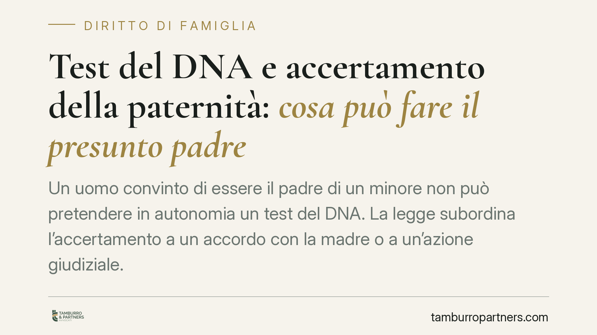

Test del DNA e accertamento della paternità: cosa può fare il presunto padre
Un uomo convinto di essere il padre di un minore non può pretendere in autonomia un test del DNA. La legge subordina l'accertamento a un accordo con la madre o a un'azione giudiziale. Il tema tocca diritti fondamentali del figlio e comporta scelte procedurali precise, con effetti sullo stato civile e sui rapporti familiari.

Il fatto e perché conta
La domanda ricorre spesso: il presunto padre può "ordinare" un test del DNA per sapere se un minore è suo figlio? La risposta è negativa se pensata come iniziativa individuale e imposta.
Il nostro ordinamento non consente di sottoporre un minore a prelievo biologico sulla sola volontà di chi si ritiene genitore. L'accertamento passa da due sole strade: il consenso della madre (e, ove necessario, di chi esercita la responsabilità genitoriale) oppure un procedimento davanti al giudice.
Inquadramento normativo
Il riconoscimento del figlio nato fuori dal matrimonio è disciplinato dall'art. 250 del codice civile. Quando il figlio ha meno di quattordici anni, il riconoscimento da parte di un genitore richiede il consenso dell'altro che abbia già riconosciuto il minore. In caso di rifiuto, la questione si risolve davanti al tribunale, che decide valutando l'interesse del figlio.
L'art. 269 cod. civ. regola invece la dichiarazione giudiziale di paternità: è l'azione con cui si chiede al giudice di accertare il rapporto di filiazione quando manca un riconoscimento volontario. La norma stabilisce un principio importante: la paternità può essere provata con ogni mezzo. Il test genetico rientra tra questi mezzi, ma è il giudice a disporlo nell'ambito del processo, non la parte a imporlo fuori dal processo.
Esiste poi un profilo delicato: il rifiuto ingiustificato di sottoporsi al prelievo. La giurisprudenza è costante nel considerarlo un elemento di prova valutabile a sfavore della parte che si sottrae. Il giudice, cioè, non può costringere fisicamente nessuno, ma può trarre conseguenze dal rifiuto.
Implicazioni pratiche
Per chi si ritiene padre, ciò significa che un test acquistato in autonomia — magari su un campione biologico raccolto senza consenso — ha valore molto limitato e può sollevare problemi ulteriori.
Due le criticità principali. La prima riguarda l'affidabilità e l'utilizzabilità: un test svolto fuori da un contesto controllato, senza garanzia sulla provenienza dei campioni, difficilmente regge in giudizio. La seconda riguarda la liceità del trattamento dei dati genetici: raccogliere e analizzare il DNA di un'altra persona, o di un minore, senza consenso valido espone a responsabilità sul piano della protezione dei dati personali.
La via corretta resta duplice. Se madre e presunto padre concordano, il riconoscimento volontario è la strada più rapida e meno conflittuale. In assenza di accordo, l'unico strumento efficace è l'azione giudiziale, nella quale il test genetico viene disposto con tutte le garanzie tecniche e processuali.
Va ricordato che al centro di ogni valutazione c'è l'interesse del figlio: alla verità biologica, ma anche alla stabilità del proprio assetto affettivo e giuridico. Il giudice bilancia questi profili caso per caso.
Cosa fare in concreto
- Verifica la situazione dello stato civile: accerta se il minore è già stato riconosciuto da altri e chi esercita la responsabilità genitoriale, perché da questo dipende il percorso.
- Tenta prima la via consensuale: proponi alla madre un accordo per il riconoscimento o per un test svolto in laboratorio accreditato, con consenso documentato di entrambi.
- Non raccogliere campioni biologici senza consenso: eviti prove inutilizzabili e possibili responsabilità sul trattamento dei dati genetici.
- In assenza di accordo, valuta l'azione ex art. 269 cod. civ.: è la sede in cui il giudice può disporre il test con piena efficacia probatoria.
- Raccogli fin da subito elementi indiziari: la paternità si prova con ogni mezzo, quindi documentazione, testimonianze e circostanze concorrono a sostenere la domanda.
Consigliamo di affrontare la questione con un confronto preliminare sul contesto specifico, perché la scelta tra via consensuale e giudiziale incide su tempi, costi e clima dei rapporti familiari.
---
Contributo informativo a cura di Tamburro & Partners - Avv. Giuseppe Tamburro. Non costituisce parere legale.
Ogni famiglia ha il suo equilibrio.
Separazione, divorzio, affidamento, assegno: se vuoi un confronto riservato su una specifica situazione, scrivi allo studio. Ti rispondiamo entro un giorno lavorativo.